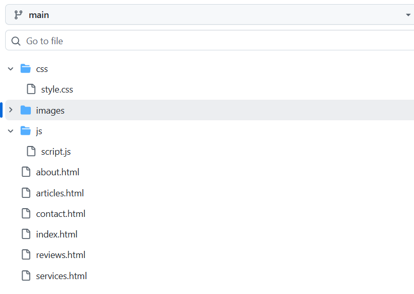
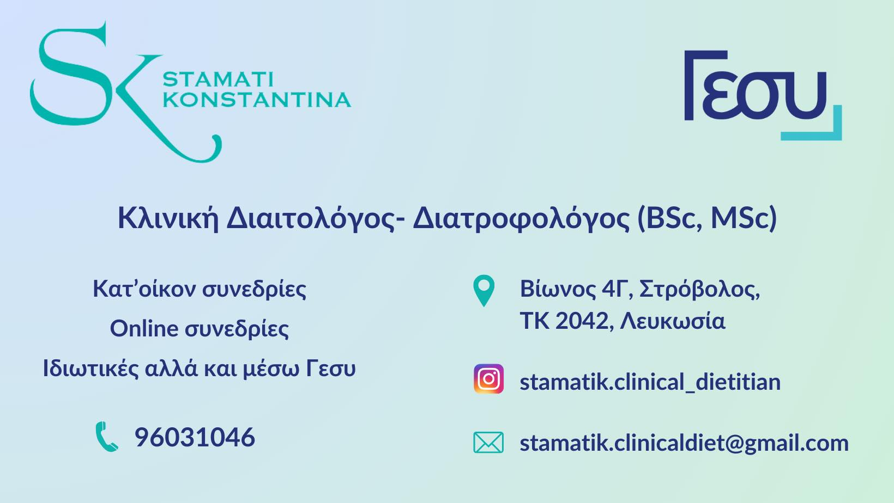

Clinic space
Clinic spacePersonal Physician for Adults - GESY
Dr Victoria Polyviou Rountakova
Evidence-based, attentive and accessible primary care in Nicosia.

5.0 Google Rating5 reviews
GESY Personal DoctorAdults
Central NicosiaStasandrou 9
Opens 08:30 ThursdayOffice 503
About the Doctor
About the Doctor
Dr Victoria Polyviou Rountakova is a Personal Physician for adults under GESY, based in Nicosia.
Professional Profile
- Personal Physician for adults under GESY
- Primary care, prevention and follow-up
- Flexible patient communication
- Evidence-based medical approach
Clinic EnvironmentClinic space
Clinic space
 Clinic space
Clinic space Clinic space
Clinic space Clinic space
Clinic space
Clinic Environment
A clean, comfortable and private consultation space in central Nicosia.
Clinic space
Clinic spaceClinic spaceClinic spaceClinic spaceMedical Services
Medical Services
Γ
Personal Physician - GESY
Registration and follow-up as a personal doctor for adult patients.
✓
Preventive Medicine
Checkups, lifestyle advice, screening and health monitoring.
＋
Chronic Disease Follow-up
Monitoring and support for common chronic conditions.
↗
Referrals & Tests
Specialist referrals, laboratory tests and medical documentation.
Patient Reviews
Patient Reviews
★★★★★
Very attentive doctor who takes her patients seriously.
Dasha Ermishkina★★★★★
Very kind, punctual and evidence-based.
Boris Drozdov★★★★★
Highly recommended by patients.
Google ReviewsContact